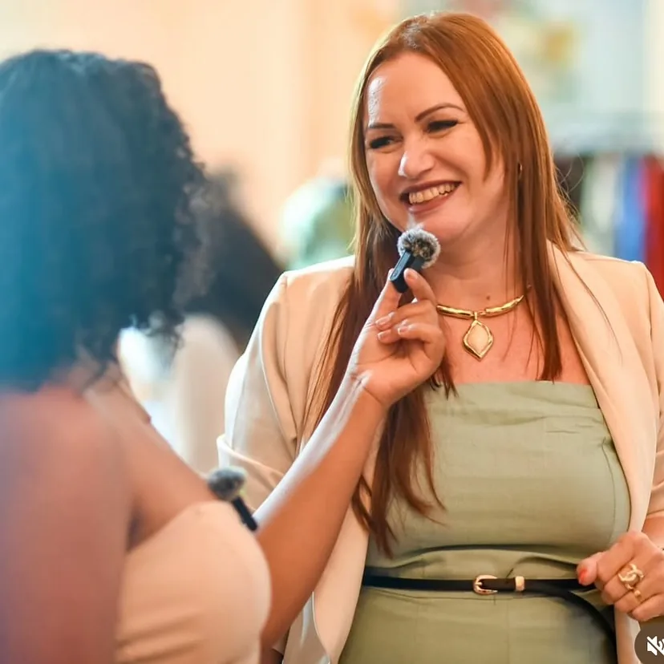

Solid Master
O curso principal da Jaque: técnicas inovadoras e os segredos das unhas que vendem e lotam a agenda.
- Fibra de vidro
- Acrigel
- Presencial

Nail designer · Educadora · Palestrante · Mentora
Jaqueline Ornela ensina profissionais a viver o próprio propósito através das unhas: cursos presenciais, mentoria e a palestra Além da Mesa.
Cursos presenciais
Aulas práticas, na mesa, com a Jaque do lado. Datas, valores e vagas ela confirma pelo WhatsApp.
O curso principal da Jaque: técnicas inovadoras e os segredos das unhas que vendem e lotam a agenda.
Para reduzir o tempo em mesa sem perder qualidade. Trabalhar rápido não é trabalhar de qualquer jeito: é trabalhar com método.
Nem sempre é hora de começar do zero. Às vezes é hora de dar uma nova direção a tudo o que você já construiu.
Palestra e desafio
Para mulheres que desejam destravar e viver uma vida plena, com leveza, propósito e segurança. A Jaque leva essa conversa para salões, imersões e eventos.
Levar a palestra para o meu eventoDeus não te deu talento para esconder.Te deu para cumprir um propósito.Jaqueline Ornela
Na mesa dela
O estilo da Jaque: formato amendoado, tons naturais e detalhes em dourado. Toque para ampliar.
Deslize para ver mais →
Atendimento
Além de ensinar, a Jaque continua atendendo no próprio espaço. Peça o catálogo de serviços e veja horários disponíveis.
Pedir o catálogoSobre a Jaque
Jaqueline Ornela é nail designer, educadora, palestrante e mentora, e se apresenta como empresária cristã. Ela conta que nada foi rápido nem fácil: foram escolhas, erros, aprendizados e recomeços.
Hoje ensina outras profissionais a enxergar a profissão além do atendimento. Em outubro de 2026, esse caminho a levou até Lisboa.
Vamos conversar
Conte o que você procura. O site monta a mensagem e abre o WhatsApp da Jaque: você revisa e envia.
Antes de começar
Sim. A Jaque trabalha com cursos presenciais. Local, datas e carga horária ela confirma pelo WhatsApp.
O Solid Master ensina fibra de vidro e acrigel. O Manutenção Express é para quem já atende e quer ganhar tempo em mesa. Em dúvida, marque “Ainda não sei” no formulário.
Os valores e as formas de pagamento são informados pela Jaque para cada turma.
Chame no WhatsApp contando sobre o seu evento, o público e a data. Ela responde com as possibilidades.